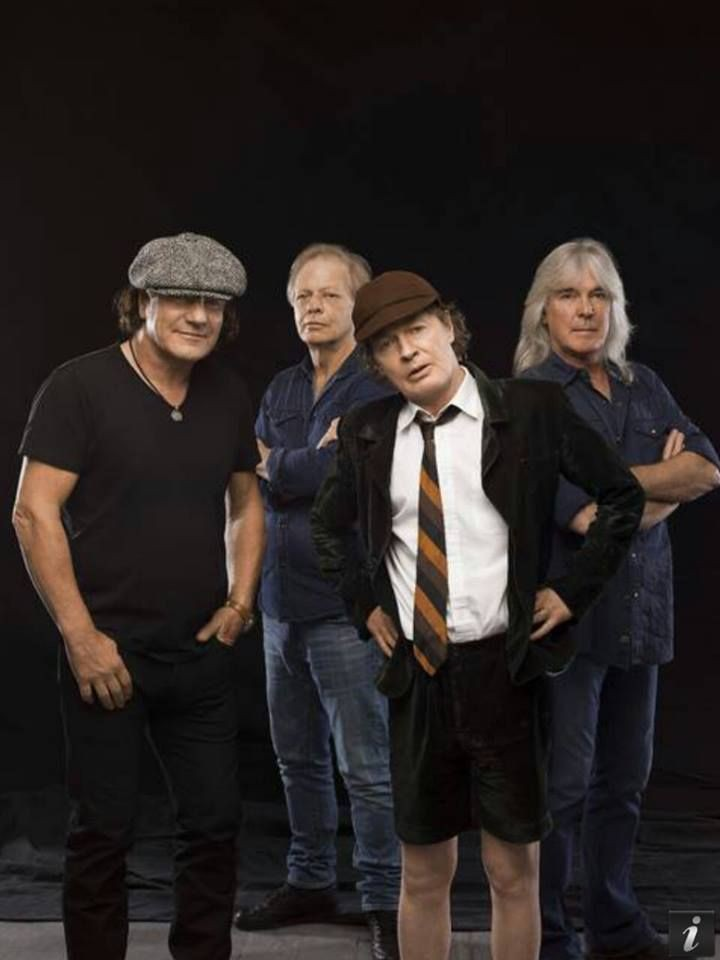

Últimos Conciertos de AC/DC
Los últimos conciertos de AC/DC han tenido lugar en diferentes ciudades de todo el mundo, desde grandes estadios hasta escenarios más íntimos. Con fechas que abarcan varios años, la banda ha recorrido diversos países, ofreciendo actuaciones memorables para sus fans. Desde Norteamérica hasta Europa, y desde Asia hasta Oceanía, AC/DC ha llevado su música a todos los rincones del planeta, dejando una huella imborrable en la historia del rock. Las fechas y ubicaciones específicas de los últimos conciertos pueden variar, pero el impacto y la emoción que generan son universales.
Leer más